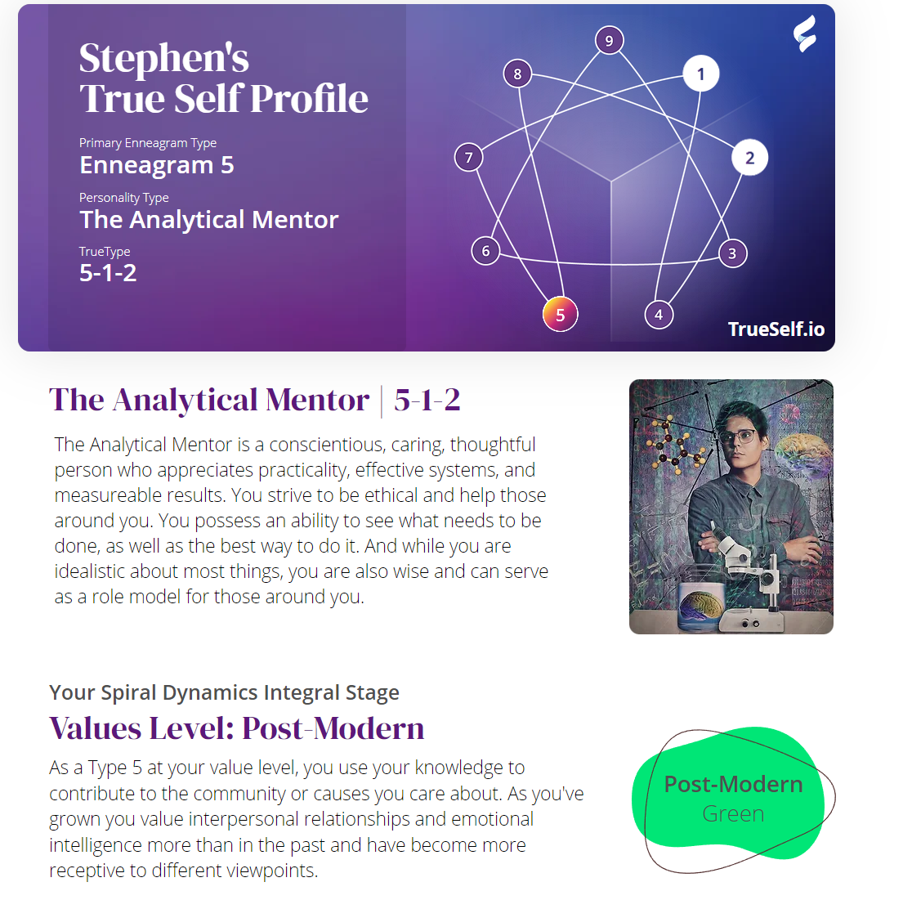

Portfolio
We learned how to code with HTML, CSS, and JavaScript.
We started learning by practicing. We worked on many projects throughout the year.
We first started our production with a video creation with TwinMotion.
We then worked on other projects leadung up to our showcase site.
We also pair those with figma to plan our code. Learning
code wasnt easy at first and is still a struggle as I learn.
The CART Habits of Mind helped guide my work and
allowed me to work with others successfully and effectively. Learning to manage code for the first time is like
barely learning how to read and getting a dictionary. The longer you stay invested in the book the more words
you know. I'm learning new techniques daily to make me a better coder.
We also learned the type of traits we
carry and how we can incorporate them to work with others traits.
